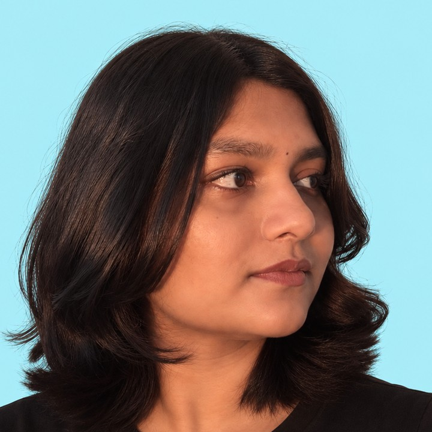

Anoushka Dandawate
Product Designer / UX Architect
Restless explorer. Research-driven questioner. Creating thoughtful digital experiences.
“Question everything. Design with intent.”
- From
- Pune, India
- College
- MIT ADT University
Institute of Design - Program
- B.Des User Experience Design
- Study
- 2023–Present
Human–AIUX StrategyDesign SystemsResearchMotionBrand
Download Resume PDF · 1 page ↓Get In Touch Currently Curious About
AI with personalityWhy people chooseMotion with purpose